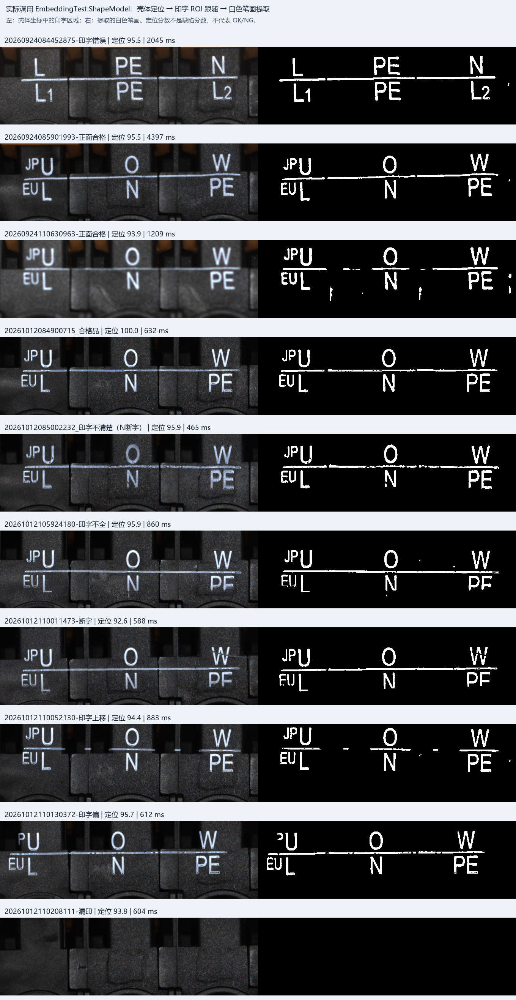

实际调用本工程 shape.core.template_core、ShapeRunner 和 affine_roi 跟随功能，使用原生 Original 后端。只建立一个下部壳体轮廓模板，屏蔽圆孔内部变化；印字、橙色拨片不参加模板建立。模板搜索平移、旋转与缩放，随后将紧凑印字 ROI 映射到各张图片并矫正为相同尺寸。
本次仅验证定位和笔画提取。没有重新训练 PatchCore、没有 OCR 识别，也没有根据定位相似度判 OK/NG。白色笔画图包含字符与分隔线；其二值化仍受浅印、模糊和反光影响，应保留原始灰度图用于后续检查。位置偏移仍保留在壳体坐标中。
| 文件 | 壳体定位分数 | 白色像素 | 定位复核 |
|---|---|---|---|
| 20260924084452875-印字错误 | 95.51 | 8454 | 原图定位框 |
| 20260924085901993-正面合格 | 95.49 | 8436 | 原图定位框 |
| 20260924110630963-正面合格 | 93.89 | 8875 | 原图定位框 |
| 20261012084900715_合格品 | 100.00 | 7994 | 原图定位框 |
| 20261012085002232_印字不清楚（N断字） | 95.90 | 8348 | 原图定位框 |
| 20261012105924180-印字不全 | 95.86 | 8015 | 原图定位框 |
| 20261012110011473-断字 | 92.58 | 7796 | 原图定位框 |
| 20261012110052130-印字上移 | 94.36 | 7304 | 原图定位框 |
| 20261012110130372-印字偏 | 95.70 | 7947 | 原图定位框 |
| 20261012110208111-漏印 | 93.75 | 0 | 原图定位框 |
定位模板及印字区域设置 · 详细记录 · ShapeModel · ROI 跟随配方
